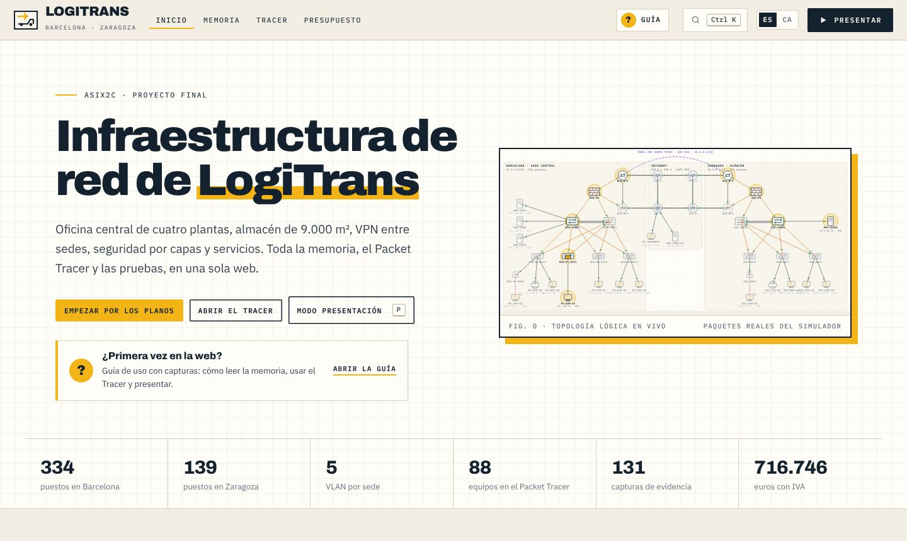
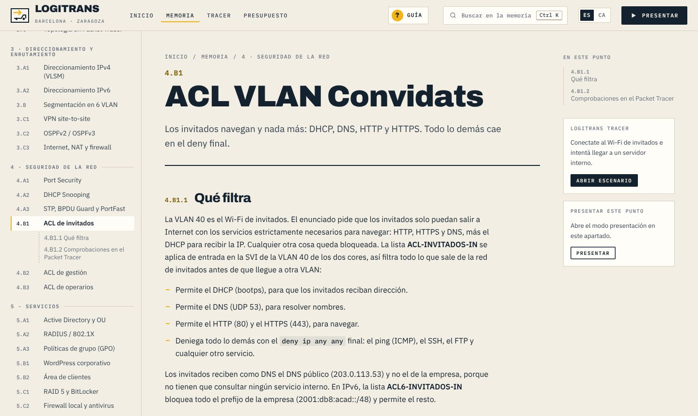
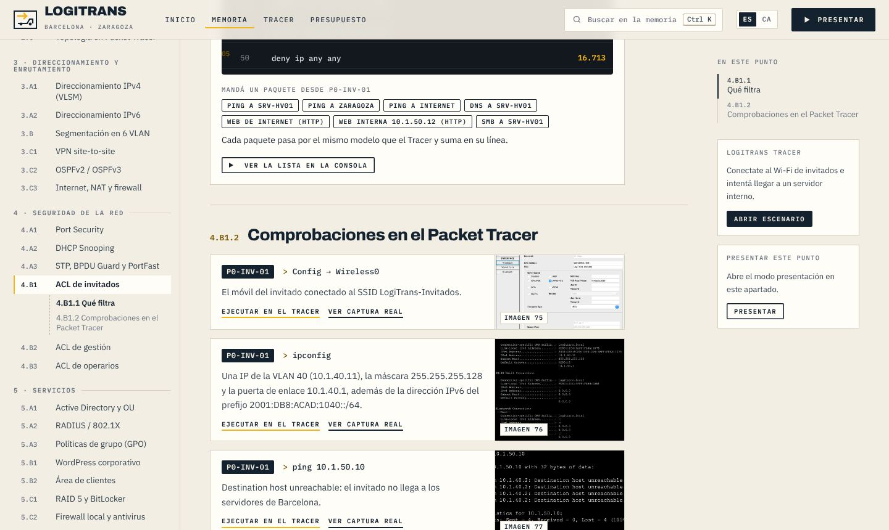
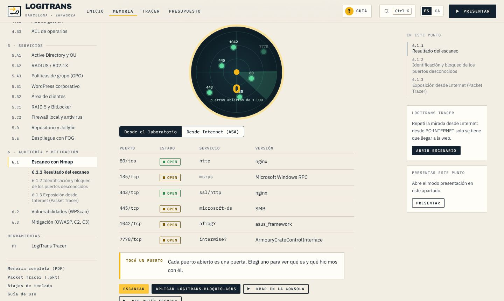
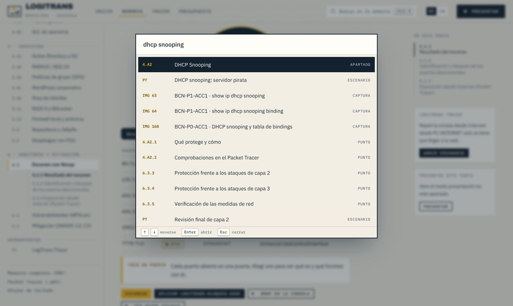
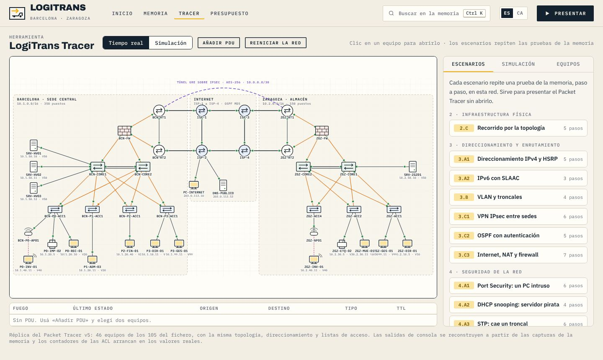
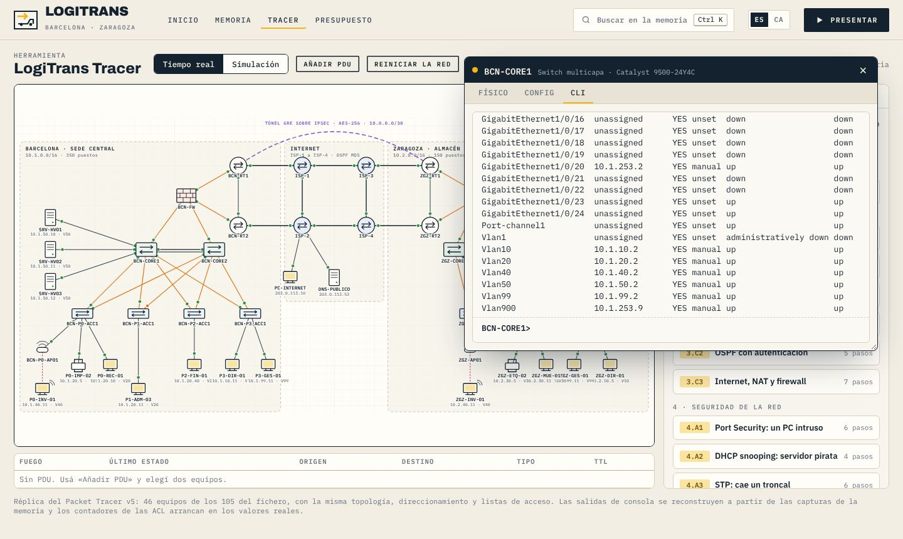
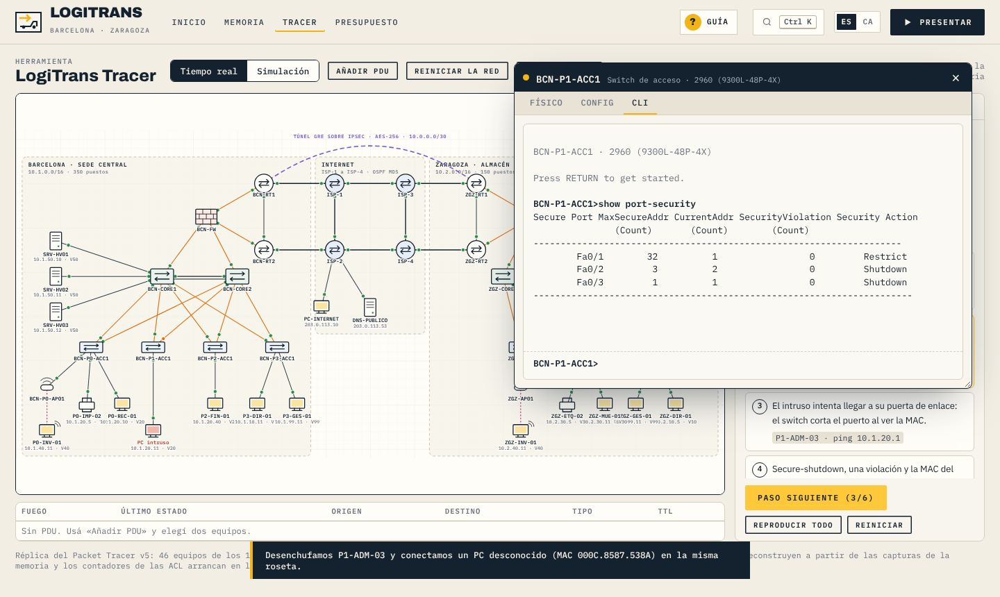
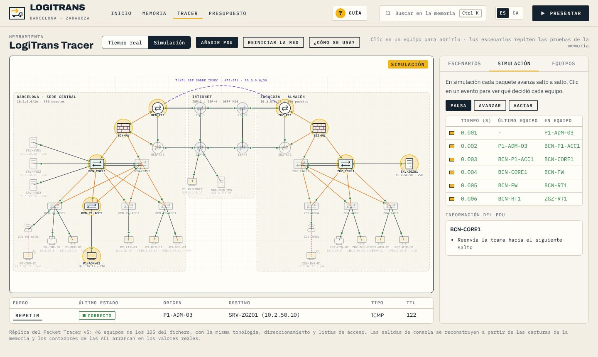
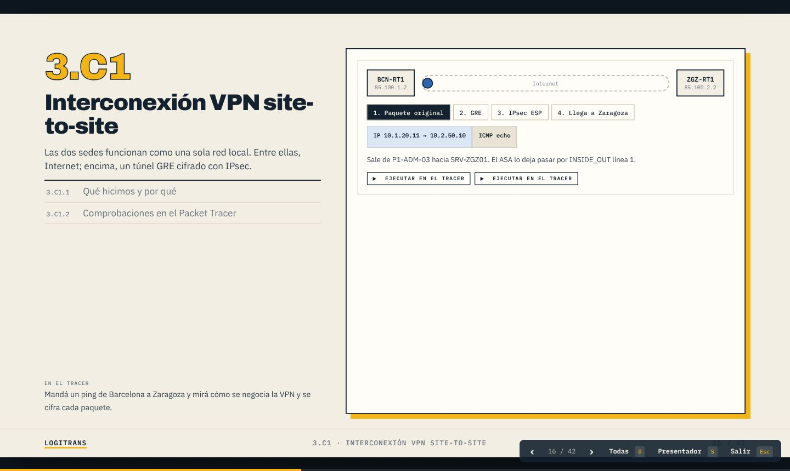

Cómo usar la web
Esta web reúne todo el proyecto: la memoria completa, una réplica del Packet Tracer que funciona dentro del navegador y un modo para presentar. Esta guía explica cada parte desde cero, para quien la abre por primera vez.
Entrá en «Memoria» y avanzá por el índice de la izquierda, del punto 0 al 6.
Entrá en «Tracer» y elegí un escenario: la web te va diciendo qué hacer.
Pulsá P en cualquier momento. Esc vuelve donde estabas.
01La barra de arriba
Siempre está visible y lleva a las cuatro partes de la web.

| Botón | Qué hay |
|---|---|
| Inicio | La portada: resumen del proyecto, las cifras, quién hizo qué (diagrama de Gantt y tabla de responsables) y las descargas. |
| Memoria | Todo el trabajo, en el mismo orden que el documento final: planos, infraestructura física, direccionamiento, seguridad, servicios y auditoría. |
| Tracer | La réplica del Packet Tracer: la red completa, con consola en cada equipo. |
| Presupuesto | Lo que cuesta montar las dos sedes, por partidas. |
| ? Guía | Abre esta guía, directamente en la parte de la página donde estás (por ejemplo, desde el Tracer abre la parte del Tracer). |
| Buscar en la memoria | Busca en todo el texto, las comprobaciones y las capturas. Ver Buscar. |
| ES | CA | Cambia toda la web entre castellano y catalán, y la recuerda para la próxima visita. Las salidas de los equipos Cisco quedan en inglés, como en el Packet Tracer real. |
| Presentar | Abre el modo presentación en el punto donde estás. |
02Leer la memoria
Cada punto de la memoria es una página. La pantalla tiene tres columnas.

Izquierda: el índice
Todos los puntos del 0 al 6. El que estás leyendo queda marcado en amarillo y debajo aparecen sus subapartados. Clic en cualquiera para saltar.
Derecha: «En este punto»
Los subapartados de la página actual, para saltar dentro de ella. Debajo hay accesos directos: «Abrir escenario» lleva al Tracer con la prueba de ese punto y «Presentar» lo muestra en diapositivas.
Para pasar al punto anterior o al siguiente sin usar el ratón, pulsá [ y ]. Arriba de cada página, la ruta («Inicio / Memoria / capítulo») sirve para volver atrás.
03Comprobaciones y capturas
Cada vez que la memoria afirma que algo funciona, lo demuestra con una comprobación: un equipo, un comando y su resultado.

- Ver captura real: abre la captura original de la memoria, a pantalla completa. Con las flechas pasás a la siguiente y Esc la cierra. También podés hacer clic en la miniatura de la derecha.
- Ejecutar en el Tracer: abre una ventana con ese mismo equipo y ese mismo comando ya ejecutado, así se ve que la salida es real y se puede seguir escribiendo comandos. Para volver, cerrá la ventana con la
×.
04Las piezas interactivas
Muchos puntos tienen una pieza para tocar: un plano, un rack, el radar de Nmap, un calculador de subredes… Todas avisan qué hacer con un texto corto encima o al lado.

Cómo se usan casi todas:
- Los botones amarillos hacen la acción principal (escanear, enviar un paquete, aplicar una regla).
- Los botones en grupo, como «Desde el laboratorio | Desde Internet», cambian el punto de vista.
- Las filas, puertos y equipos se pueden tocar para ver la explicación.
- Los botones con
▶abren ese comando en el Tracer.
Las piezas de la memoria y el Tracer comparten la misma red. Si apagás un puerto o activás una regla en una pieza, el Tracer lo refleja. Para dejarlo todo como en las capturas, usá «Reiniciar la red» en el Tracer.
05Buscar
Pulsá Ctrl K (o /) en cualquier página, o clic en «Buscar en la memoria». Escribí lo que buscás, por ejemplo dhcp snooping, 10.1.50.12 o show access-lists. Con las flechas elegís un resultado y con Enter vas a él. Busca en el texto, en las comprobaciones y en los pies de las capturas.

06El Tracer: lo básico
LogiTrans Tracer es una réplica del Packet Tracer del proyecto que funciona dentro de la web. Sirve para enseñar la red funcionando sin abrir Cisco Packet Tracer.

El mapa
Barcelona a la izquierda, Zaragoza a la derecha e Internet (cuatro ISP en anillo) en el medio. La línea discontinua de arriba es el túnel VPN. Debajo de cada equipo está su nombre y su IP.
El panel de la derecha
Escenarios: las pruebas de la memoria, guiadas. Simulación: los paquetes salto a salto. Equipos: la lista de todos los equipos para abrirlos.
Abrir un equipo
Clic en cualquier equipo del mapa. Se abre una ventana con las mismas pestañas que en Packet Tracer:
| Pestaña | Qué muestra | En qué equipos |
|---|---|---|
| Físico | El frontal del equipo con las luces de cada puerto: verde conectado, gris apagado, rojo parpadeando si el puerto se cortó por seguridad. Pasá el ratón por un puerto para ver su VLAN. | Todos |
| Config | La configuración resumida: interfaces, IP y VLAN. | Todos |
| CLI | La consola de comandos de Cisco. | Routers, switches y firewalls |
| Escritorio | Configuración IP, Símbolo del sistema y Navegador web, como en un PC de Packet Tracer. | PC y servidores |
| Servicios | DHCP, DNS, AAA y los demás servicios del servidor. | Servidores |
Las ventanas se pueden mover arrastrando la barra de arriba y se cierran con la ×. Se pueden tener varias abiertas a la vez.
«Reiniciar la red», arriba, deja todo como en las capturas: puertos encendidos, contadores de las ACL y ventanas cerradas.
Es una réplica fiel pero reducida: 46 de los 105 equipos del fichero original, con la misma topología, el mismo direccionamiento y las mismas listas de acceso. Las respuestas de los equipos se reconstruyeron a partir de las capturas de la memoria.
07El Tracer: la consola
En la pestaña CLI se escriben comandos de verdad, como en un Cisco.

show ip interface brief.- Escribí el comando y pulsá Enter.
- Se aceptan abreviaturas como en IOS:
sh ip int bres lo mismo queshow ip interface brief. - Tab completa la palabra y ? muestra la lista de comandos que acepta ese equipo.
- ↑ y ↓ recuperan los comandos anteriores.
- Se puede filtrar como en IOS:
show running-config | include ospf.
Comandos para empezar
| Equipo | Comando | Qué enseña |
|---|---|---|
| BCN-CORE1 | show ip interface brief | Las interfaces y las IP de cada VLAN |
| BCN-CORE1 | show standby brief | HSRP: qué core es la puerta de enlace activa |
| BCN-CORE1 | show access-lists | Las ACL con sus contadores reales |
| BCN-P1-ACC1 | show port-security | Port Security por puerto |
| BCN-P1-ACC1 | show ip dhcp snooping | Puertos de confianza y límite de peticiones |
| BCN-RT1 | show ip ospf neighbor | Los vecinos OSPF |
| BCN-RT1 | show crypto isakmp sa | El estado de la VPN |
| BCN-RT1 | show ip nat translations | Las traducciones NAT |
| BCN-FW | show access-list | Las reglas del firewall ASA |
| P1-ADM-03 | ipconfig, ping 10.1.50.10, tracert 10.2.50.10 | Escritorio → Símbolo del sistema de un PC de Administración |
En los puntos 5 y 6 también aparecen consolas de Windows (Símbolo del sistema y PowerShell) del servidor de dominio y del equipo de auditoría. Funcionan igual.
08El Tracer: escenarios
Lo más fácil para enseñar la red. Cada escenario repite una prueba de la memoria paso a paso y explica cada paso en una frase.

- En el panel de la derecha, pestaña Escenarios, elegí uno. El número amarillo es el punto de la memoria que demuestra.
- Pulsá Empezar. Cada clic en Paso siguiente (o la tecla N) hace un paso: resalta los equipos, abre la consola, escribe el comando o provoca el problema (desenchufar un PC, cortar un cable, conectar un DHCP pirata…).
- Reproducir todo los hace todos seguidos. Reiniciar vuelve al principio.
- «Todos los escenarios», arriba, vuelve a la lista.
Hay 17 escenarios: topología, IPv4 y HSRP, IPv6, VLAN, VPN, OSPF, NAT, Port Security, DHCP snooping, STP, BPDU Guard, las tres ACL, RADIUS, exposición desde Internet y la revisión final. Desde cada punto de la memoria, el botón «Abrir escenario» de la derecha lleva directo al suyo.
09El Tracer: simulación
Igual que el modo simulación de Packet Tracer: se ve cada paquete viajando de equipo en equipo y qué decidió cada uno.

- Arriba, cambiá de Tiempo real a Simulación.
- Pulsá Añadir PDU y hacé clic en dos equipos del mapa: primero el origen (un PC o un servidor) y después el destino.
- El paquete recorre la red. En la pestaña Simulación aparece la lista de eventos: clic en uno para ver qué hizo ese equipo (reenviar, traducir con NAT, cifrar en la VPN, descartar por una ACL…).
- Reproducir o Pausa controla la animación, Avanzar va de a un salto y Vaciar borra la lista.
Abajo del mapa queda la tabla de PDU enviados con «Correcto» o «Fallido». «Repetir» vuelve a mandar el mismo paquete. Esta tabla funciona también en Tiempo real.
10Modo presentación
Para la defensa ante el tribunal: diapositivas a pantalla completa hechas con la misma memoria, con las piezas interactivas funcionando.

- Pulsá P o el botón «Presentar». Empieza en el punto donde estabas.
- → o Espacio avanza y ← retrocede. Algunas diapositivas tienen varios pasos antes de pasar a la siguiente.
- G muestra todas las diapositivas para saltar a cualquiera. B pone la pantalla en negro.
- S abre la vista del presentador en otra ventana: la diapositiva actual con sus pasos, las notas de qué decir, el título de la siguiente, la hora y un cronómetro. Tiene sus propios botones de anterior y siguiente. Se mueve sola con la presentación. Lo ideal es dejarla en el portátil y la presentación en el proyector.
- Esc sale y te deja en el mismo punto de la memoria.
11Atajos de teclado
Dentro de la web, ? muestra esta lista.
| Tecla | Qué hace |
|---|---|
| Ctrl K o / | Buscar en toda la memoria |
| [ ] | Punto anterior o siguiente de la memoria |
| T | Abrir el Tracer |
| N | Paso siguiente del escenario abierto en el Tracer |
| P | Modo presentación |
| → Espacio · ← | Avanzar y retroceder en la presentación |
| G · B · S | Todas las diapositivas · pantalla en negro · vista del presentador |
| Esc | Cerrar lo que esté abierto o salir de la presentación |
| ? | Ayuda de atajos |
Mientras escribís en una consola o en el buscador, las letras se escriben normalmente y no activan atajos.
12Si algo no va
| Pasa esto | Hacé esto |
|---|---|
| Se ve una versión vieja | Recargá con Ctrl F5. |
| La consola no escribe | Hacé clic dentro de la ventana de la consola. |
| Un puerto quedó apagado o una ACL cambió | «Reiniciar la red» en el Tracer. |
| La vista del presentador no se mueve | Abrila con S desde la presentación, en el mismo navegador. Si el navegador bloquea la ventana nueva, permití las ventanas emergentes. |